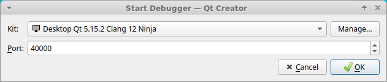

Source Installation on Ubuntu
이 지침은 Ubuntu Jammy (22.04) 및 Ubuntu Noble (24.04)에 적용됩니다.
Install tools
소스 컴파일을 돕기 위해 몇 가지 추가 도구를 사용하는 것이 권장되지만, 소스를 올바르게 가져오고 빌드하는 다른 방법도 가능합니다.
모든 라이브러리의 소스를 가장 쉽게 얻는 방법은 vcstool을 사용하는 것입니다.
모든 다양한 라이브러리와 gz-sim을 올바른 순서로 컴파일하려면 colcon이 권장됩니다. colcon 도구는 pip (또는 pip가 실패할 경우 pip3)를 사용하여 모든 플랫폼에서 사용할 수 있습니다.
일부 도구는 Python 3.5 (또는 그 이상)를 필요로 하며, 이는 일부 플랫폼(예: Ubuntu Focal)에서 기본 옵션이 아닙니다. Python virtualenv는 기본 옵션을 쉽게 변경할 수 없는 경우 유용한 해결책이 될 수 있습니다.
Generic tools
이 튜토리얼에 필요한 도구를 설치합니다:
sudo apt install python3-pip python3-venv lsb-release gnupg curl git
vcstool and colcon from pip
PIP는 모든 플랫폼에서 사용할 수 있습니다. PIP 작업 공간을 사용하여 도구를 설치합니다:
python3 -m venv $HOME/vcs_colcon_installation
. $HOME/vcs_colcon_installation/bin/activate
pip3 install vcstool colcon-common-extensions
vcs와 colcon은 이제 현재 터미널의 PIP 작업 공간에서 사용할 수 있습니다. 다른 터미널에서 사용하려면 위에서 수행한 것처럼 activate 스크립트를 실행하십시오.
vcstool and colcon from apt
다른 방법은 Debian 또는 Ubuntu에서 사용 가능한 .deb 패키지를 사용하는 것입니다:
sudo sh -c 'echo "deb http://packages.ros.org/ros2/ubuntu $(lsb_release -sc) main" > /etc/apt/sources.list.d/ros2-latest.list'
curl -s https://raw.githubusercontent.com/ros/rosdistro/master/ros.asc | sudo apt-key add -
sudo apt-get update
sudo apt-get install python3-vcstool python3-colcon-common-extensions
Getting the sources
아래 지침은 디렉토리 관리를 위해 일부 UNIX 명령을 사용하지만, Windows에서의 동등한 대안도 동일한 결과를 제공해야 합니다.
첫 번째 단계는 vcstool과 colcon이 작동할 수 있는 개발자 작업 공간을 만드는 것입니다:
mkdir -p ~/workspace/src
cd ~/workspace/src
gazebo-harmonic의 모든 소스는 yaml 파일에 선언되어 있습니다. 작업 공간으로 다운로드합니다:
curl -O https://raw.githubusercontent.com/gazebo-tooling/gazebodistro/master/collection-harmonic.yaml
vcstool을 사용하여 해당 저장소에서 모든 Gazebo 라이브러리 소스를 자동으로 가져옵니다:
vcs import < collection-harmonic.yaml
src 하위 디렉토리에는 빌드 준비가 된 모든 소스가 포함되어야 합니다.
Install dependencies
컴파일하기 전에 Harmonic 컬렉션을 구성하는 다양한 패키지의 모든 종속성을 설치해야 합니다. 모든 플랫폼에는 소프트웨어 종속성을 설치하는 다른 방법이 있습니다.
packages.osrfoundation.org를 apt 소스 목록에 추가합니다:
sudo curl https://packages.osrfoundation.org/gazebo.gpg --output /usr/share/keyrings/pkgs-osrf-archive-keyring.gpg
echo "deb [arch=$(dpkg --print-architecture) signed-by=/usr/share/keyrings/pkgs-osrf-archive-keyring.gpg] http://packages.osrfoundation.org/gazebo/ubuntu-stable $(lsb_release -cs) main" | sudo tee /etc/apt/sources.list.d/gazebo-stable.list > /dev/null
sudo apt-get update
아래 명령은 Gazebo 소스 코드가 있는 작업 공간에서 실행해야 하며 Ubuntu에 모든 종속성을 설치합니다:
cd ~/workspace/src
sudo apt -y install \
$(sort -u $(find . -iname 'packages-'`lsb_release -cs`'.apt' -o -iname 'packages.apt' | grep -v '/\.git/') | sed '/gz\|sdf/d' | tr '\n' ' ')
Building the Gazebo Libraries
컴파일러와 모든 소스가 준비되면 컴파일할 차례입니다. 작업 공간으로 변경하고 colcon에 의해 인식되는 패키지를 나열하여 절차를 시작합니다:
cd ~/workspace/
colcon graph
colcon graph는 interdependency diagram과 함께 Gazebo 라이브러리를 나열해야 합니다. 그렇다면 전체 라이브러리 세트를 빌드할 준비가 된 것입니다:
:::{warning}
컴파일에는 최대 16GB의 RAM 메모리가 필요할 수 있습니다. 필요한 경우 컴파일 스레드 수를 줄이려면 해당 지침에 자세히 설명된 대로 colcon과 함께 MAKEFLAGS를 사용하십시오.
:::
colcon build --merge-install
빌드 프로세스 속도를 높이려면 다음을 사용하여 테스트를 비활성화할 수도 있습니다.
colcon build --cmake-args ' -DBUILD_TESTING=OFF' --merge-install
디버거를 사용하려면 디버그 심볼을 활성화하십시오. Gazebo는 느리게 실행되지만 GDB를 사용할 수 있습니다:
colcon build --cmake-args ' -DBUILD_TESTING=OFF' ' -DCMAKE_BUILD_TYPE=Debug' --merge-install
특정 패키지와 모든 종속 패키지를 빌드하려면:
colcon build --merge-install --packages-up-to PACKAGE_NAME
단일 패키지를 빌드하려면:
colcon build --packages-select PACKAGE_NAME
더 많은 colcon 빌드 및 테스트 옵션을 보려면 colcon documentation을 방문하십시오.
오류가 없으면 모든 바이너리를 사용할 준비가 된 것입니다. 오류는 Troubleshooting 섹션에서 확인할 수 있습니다.
Using the workspace
새 터미널을 사용할 때마다 작업 공간을 소싱해야 합니다.
bash에서 작업 공간을 소싱하려면 다음 명령을 실행하십시오:
. ~/workspace/install/setup.bash
또는 zsh에서:
. ~/workspace/install/setup.zsh
이것으로 소스 설치 지침이 끝났습니다. Gazebo 사용을 시작하려면 Getting started 페이지로 돌아가십시오!
Uninstalling source-based install
소스 기반 설치는 원하는 결과에 따라 여러 가지 방법을 사용하여 "제거"할 수 있습니다:
-
위 지침에 따라
colcon으로 작업 공간을 설치한 경우, "제거"는 새 터미널을 열고 작업 공간의setup.sh를 소싱하지 않는 것만으로 충분할 수 있습니다. 이렇게 하면 사용자의 환경은 시스템에 Gazebo가 설치되지 않은 것처럼 작동합니다. -
라이브러리를 사용하지 않으려는 것 외에도 공간을 확보하려는 경우 다음 명령으로 전체 작업 공간 디렉토리를 삭제할 수 있습니다:
bash rm -rf ~/workspace -
소스 코드를 유지하려면 원하는 대로
install/build/log디렉토리를 제거하고src디렉토리는 남겨둘 수 있습니다.
Troubleshooting
Troubleshooting를 참조하십시오.
QML Debugging
QML 디버깅을 수행하려면 다음이 필요합니다:
- colcon에
--cmake-args -DDQT_QML_DEBUG플래그 추가 - QtCreator
다음과 같이 Gazebo를 빌드해야 합니다:
colcon build --cmake-args ' -DQT_QML_DEBUG' --merge-install
참고: 고급 사용자는
gz-sim프로젝트에만 이 플래그가 필요하다는 점에 유의할 수 있습니다.
이 작업이 완료된 후 gz sim -g를 실행하면 다음 메시지가 표시됩니다:
QML debugging is enabled. Only use this in a safe environment.
QML Debugger: Waiting for connection on port 40000...
그 후 QtCreator -> Debug -> Start Debugging -> Attach to QML Port...로 이동하여 QML 포트를 입력하면 됩니다.

거기를 클릭한 후 포트 번호를 40000으로 설정하고 확인을 누릅니다.

QtCreator 통합을 개선하여 별도의 설정 없이 바로 작동하도록 노력하고 있습니다.
ruby gz 스크립트는 아직 애플리케이션에 필요한 명령줄 인수를 전달하지 않습니다.
모든 인스턴스가 포트 40000을 사용하려고 하기 때문에 하나의 인스턴스만 사용할 수 있다는 점에 유의하십시오. 프로세스를 종료하고 너무 빨리 즉시 다시 시작하면 OS가 여전히 포트가 사용 중이라고 주장할 수 있으므로 두 번째 (재)실행은 QML 디버거 연결 요청을 수신하지 않습니다.
Avoid QML stall waiting for debugger on startup
개발 중에 QtCreator가 QML 디버깅 포트에 연결될 때까지 gz sim -g가 실제로 시작되지 않아 불편할 수 있습니다.
이것이 문제라면 C++ 파일 gz-sim/src/gz.cc를 편집하고 여기서 block을 제거할 수 있습니다. 예:
// The following:
const_cast<char *>(
"-qmljsdebugger=port:40000,block,services:DebugMessages,QmlDebugger,"
"V8Debugger,QmlInspector,DebugTranslation")
// Must become the following
const_cast<char *>(
"-qmljsdebugger=port:40000,services:DebugMessages,QmlDebugger,"
"V8Debugger,QmlInspector,DebugTranslation")